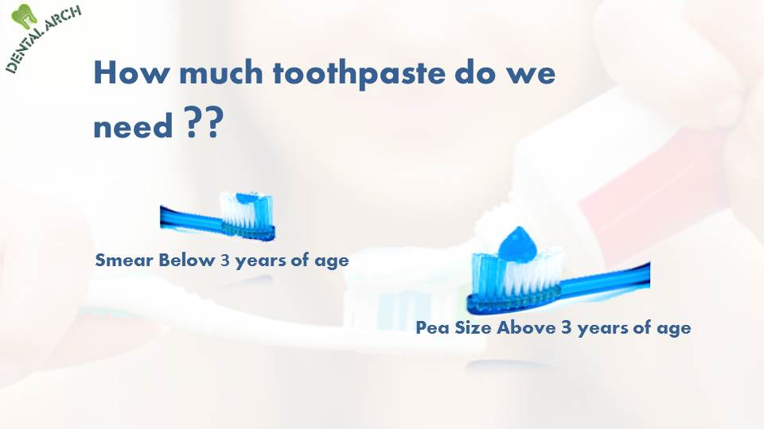

How much toothpaste do we need for brushing???
Expert Opinion
- What does the toothpaste do?
Toothpaste is an abrasive material which helps in mechanical action of toothbrush in removing plaque and debris from teeth and gums. Some medicated toothpastes are available which contain fluoride which helps in preventing tooth decay. Also toothpaste helps in removing bad breath and halitosis. - How much toothpaste do we need to brush our teeth?
 - Can we brush our teeth without toothpaste?
Major cleaning action is performed by toothbrush & toothpaste is only an adjunct to it. So, minimal amount of toothpaste is sufficient combined with a good brushing technique.
Tooth Sensitivity!!
Reasons & Remedy
# On drinking cold water or a sip of tea or coffee makes you uneasy or eating ice-cream or yogurt is a nightmare, you may have a common problem known as “sensitive teeth.”
# Various causes of sensitivity in teeth include:
1. Forceful brushing of teeth – it is the most common cause of tooth sensitivity. It causes thinning of the protective layer on our teeth that is enamel. Enamel protects our teeth against insult from food or fluids we take. Loss of enamel leads to sensitivity of teeth.
Remedy: Gentle brushing of teeth Use soft bristle brush Change brush after 3- 6 months ( as the bristles wear away) Use little toothpaste ( toothpaste has abrasive particles which causes wear away of enamel) Do brushing in up-down movement
2. Tooth decay - Caries in tooth lead to tooth sensitivity. Caries remove the protective enamel layer exposing dentine layer to food and fluids. Dentine carries nerves which causes sensitivity
Remedy: Treatment involves removal of tooth decay and placement of protective barrier on dentine that is a filling material
3. Old tooth fillings – over a period of time fillings may crack or break or get removed which leads to sensitivity.
Remedy: Change of filling in tooth
4. Exposed tooth roots - as a result of aggressive tooth brushing, gum recession and gum disease. It causes tooth sensitivity.
Remedy: Use soft bristle brush Visit your dentist for gum disease treatment
5. Plaque and calculus - The purpose of brushing is to remove plaque that forms after eating food. An excessive build-up of plaque can cause your enamel to wear away. Again, your teeth can become more sensitive as they lose their enamel protection.
Remedy: The solution is to practice good daily dental care and visit your dentist for cleanings every six months.
6. Habit of eating acidic foods - fruits like lemon, sweet lime, pickles and tomato juice contains acid which can dissolve enamel of teeth. Frequent use of acidic food causes tooth sensitivity.
7. Habit of tooth-grinding – grinding also causes tooth sensitivity due to loss of enamel.